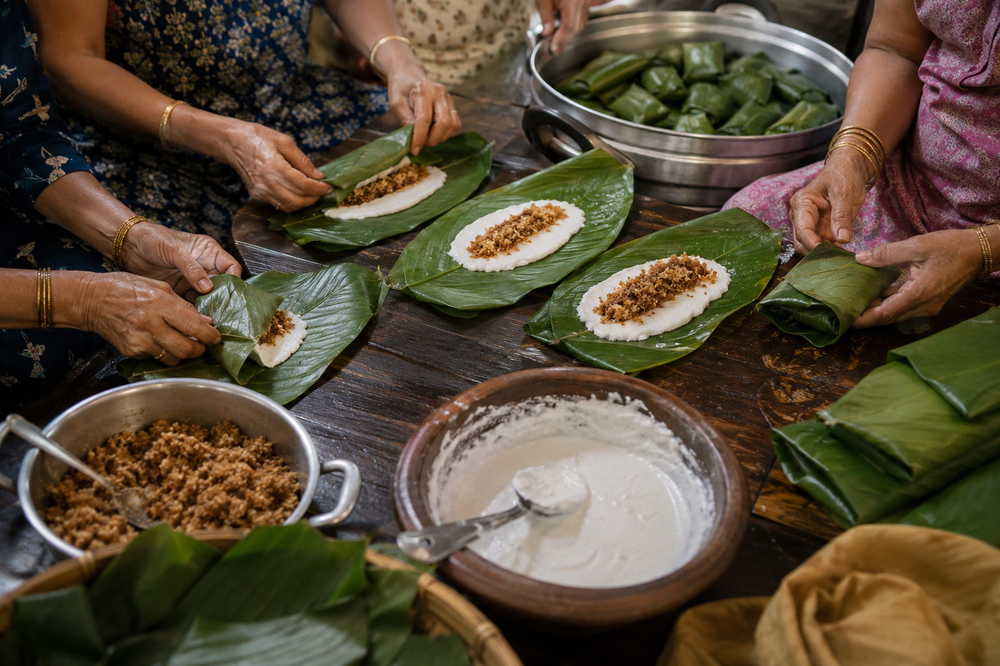
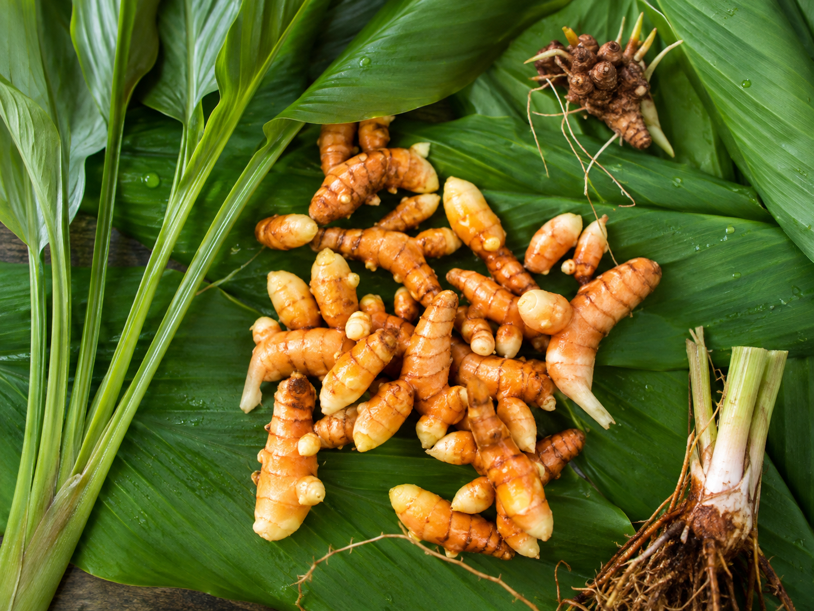
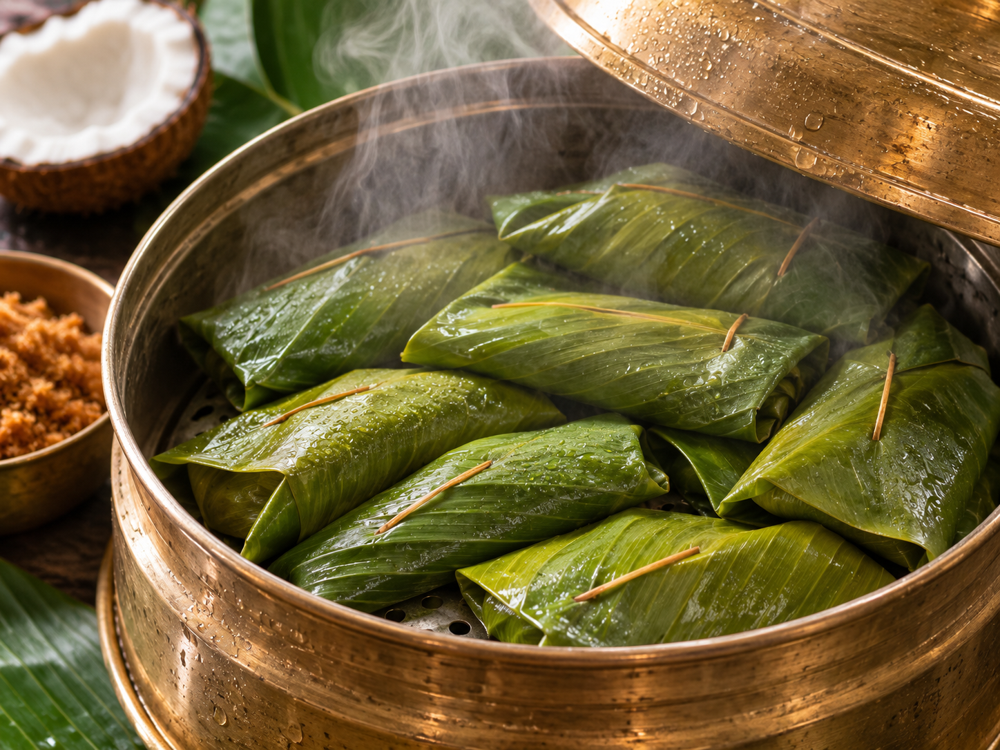

Some foods announce a season before the clouds do. Patoleo is one of them: rice batter, a sweet filling, a leaf folded close, and steam gathering on the lid.
Its shape is modest, but the ritual around it is not. In many Goan homes, the work begins with choosing leaves that are broad enough to wrap and fragrant enough to leave their mark. The filling is mixed by memory, adjusted by taste, and rarely measured in the same way twice.
There is a particular kind of patience in making it. The leaf must be handled without tearing; the batter must be spread thinly; the parcels must sit long enough for the sweet to settle into itself.
“A patoleo is a little monsoon parcel: warm, green, and made to be opened at the table.”
What matters is not a single version of the sweet, but the repetition of the gesture. It returns with the rains, arrives at family gatherings, and makes the kitchen feel like a place where seasons are still noticed.



That attention is what Kokanee Hooman wants to preserve: not a frozen version of tradition, but the small reasons it continues to matter. A recipe survives because someone chooses to make it again.